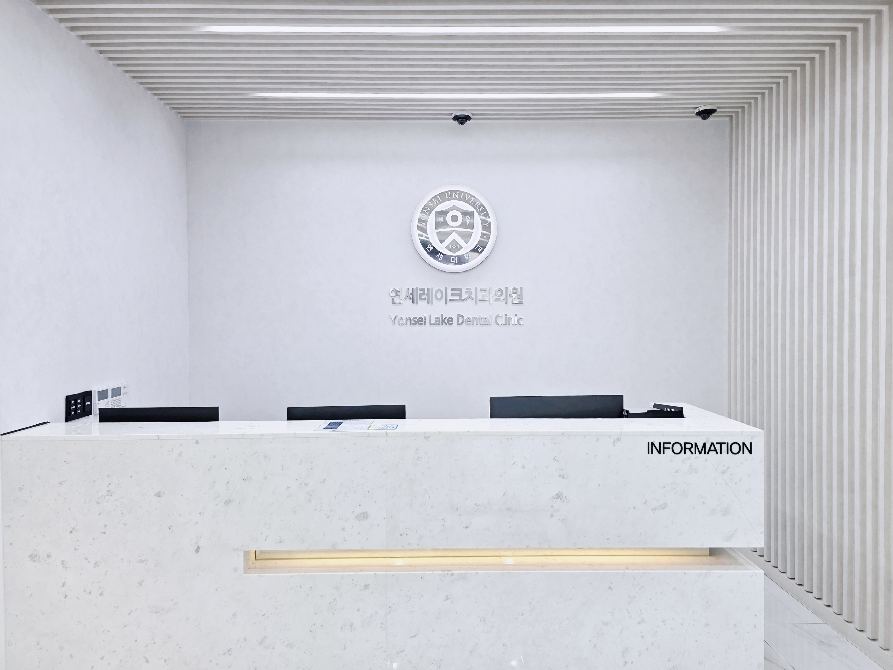
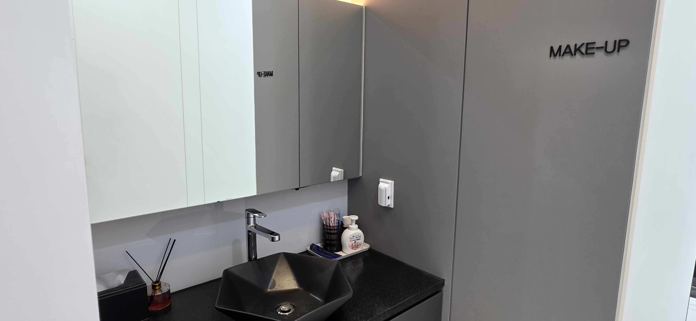
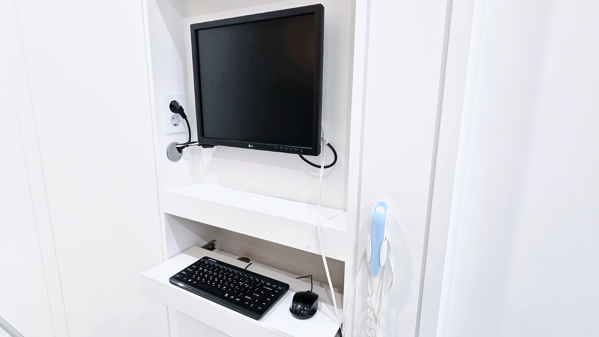
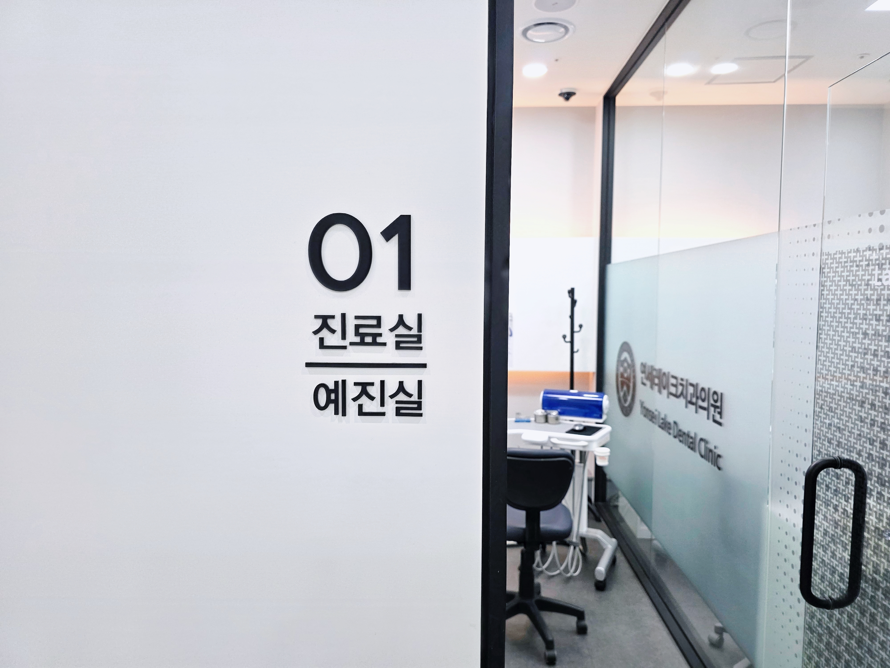
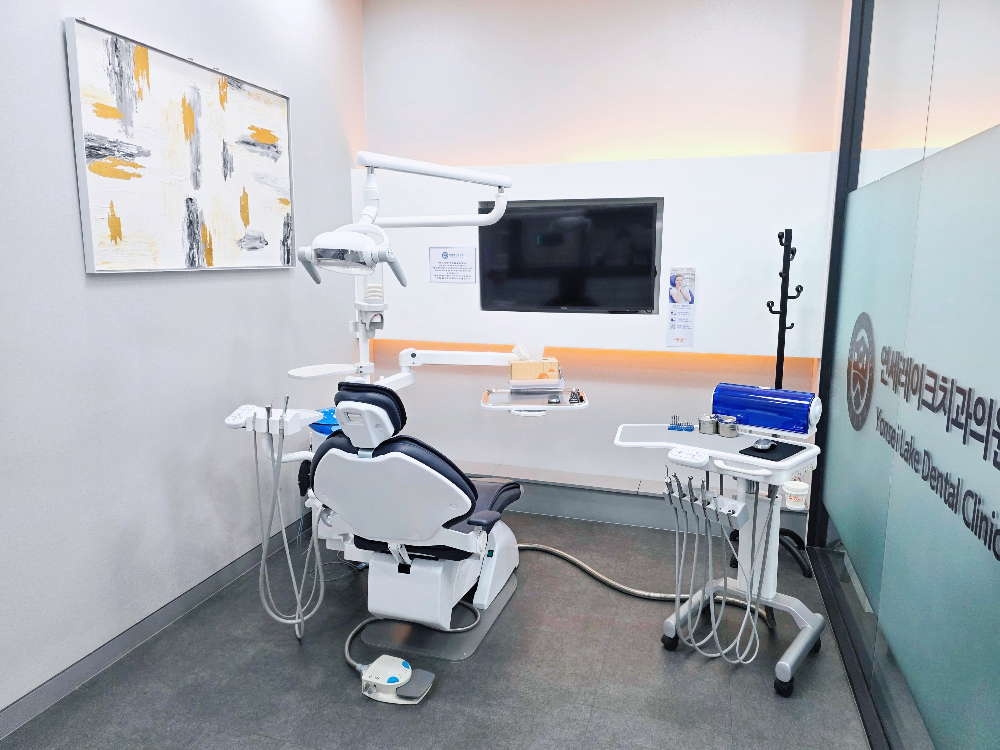
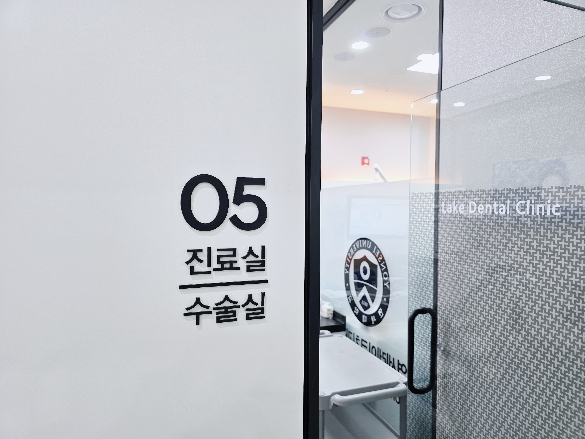
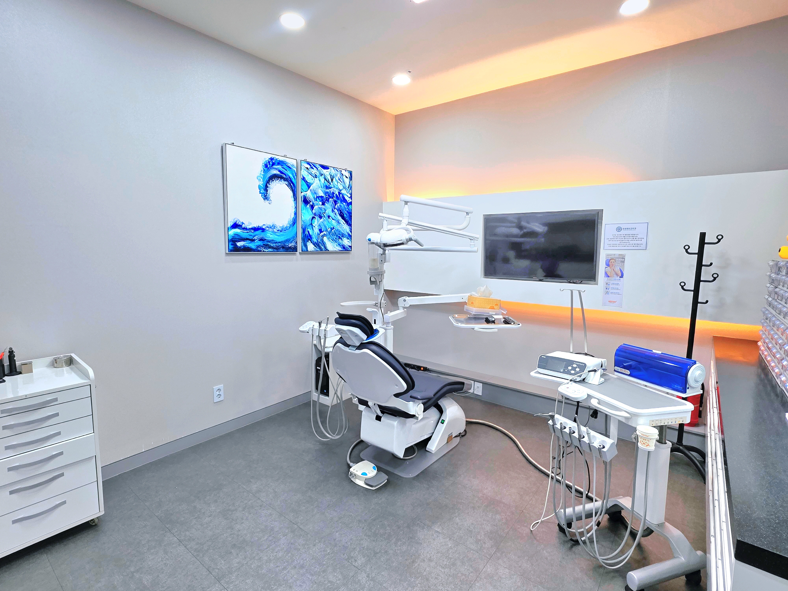
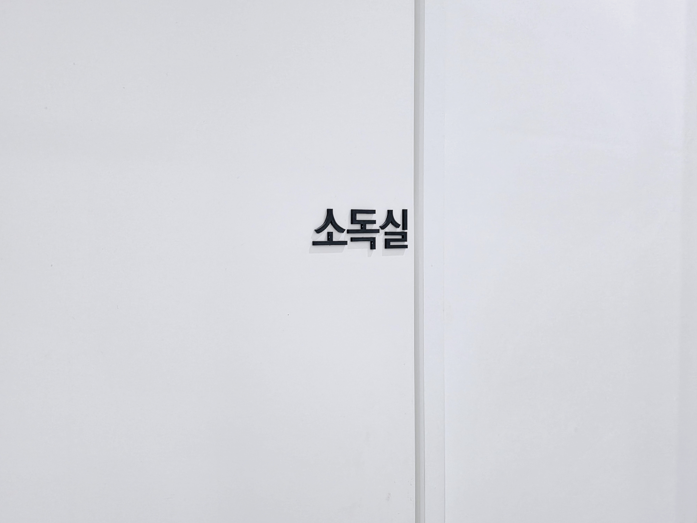
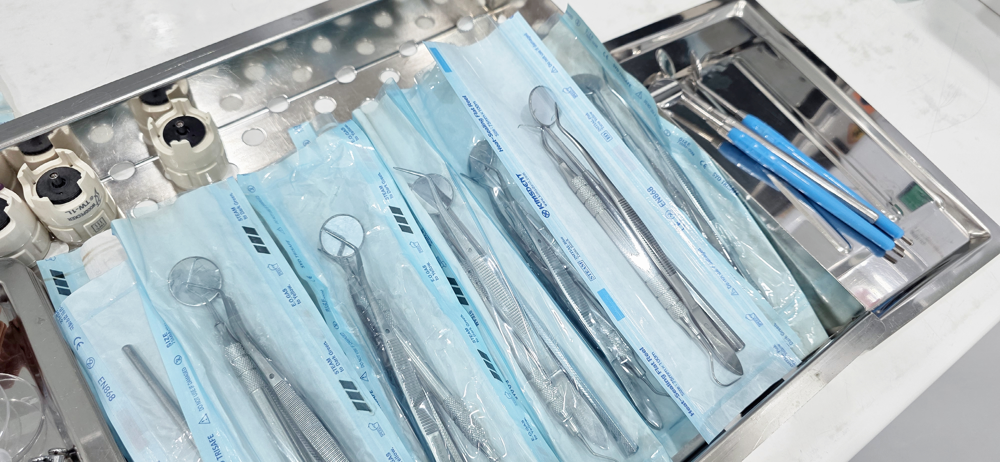
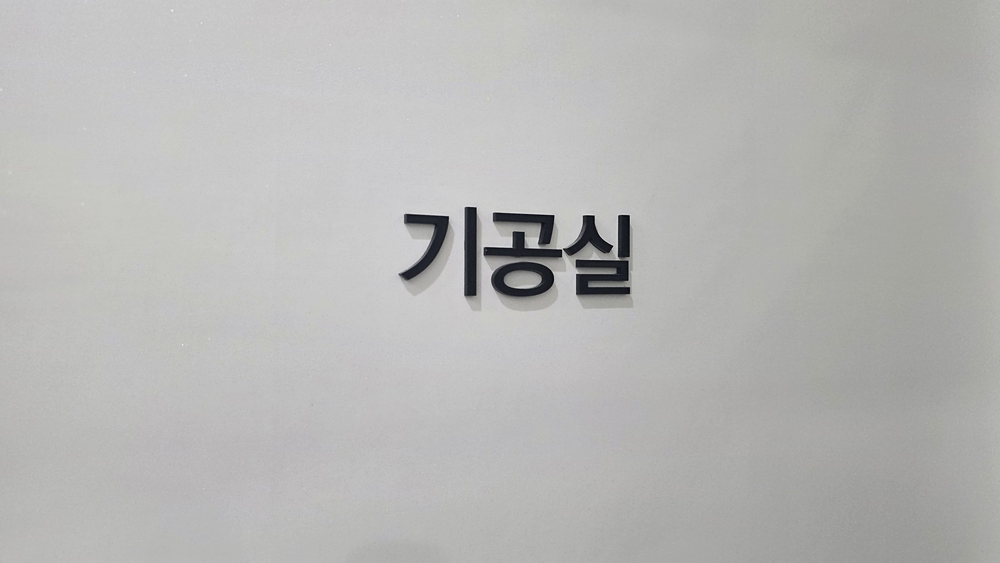

충분히 듣고 설명하는 상담
환자분의 불편감과 고민을 먼저 듣고, 필요한 진료 방향을 이해하기 쉽게 안내합니다.
디지털 장비를 활용한 진단
구강 상태를 세밀하게 확인하여 치료 전 확인해야 할 부분을 꼼꼼하게 살핍니다.
청결과 안전을 고려한 환경
진료 공간과 기구 관리 과정을 체계적으로 운영해 위생적인 진료 환경을 유지합니다.
긴장을 덜어주는 아늑한 대기 공간
진료 전 머무는 시간도 편안할 수 있도록 밝고 따뜻한 분위기의 라운지 공간을 마련했습니다.


치과 방문이 긴장되는 일이라는 것을 알기에, 대기 공간은 밝고 정돈된 분위기로 구성했습니다. 진료를 기다리는 동안 편안하게 휴식하실 수 있도록 세심하게 준비했습니다.
충분한 설명을 위한 상담 공간
독립된 상담 공간에서 환자분의 고민을 듣고, 현재 상태와 필요한 치료 방향을 차분히 안내합니다.
필요한 치료 중심의 진단
당장 치료가 필요한 부분과 경과 관찰이 가능한 부분을 구분하여 설명하고, 자연치아 보존을 우선적으로 고려합니다.
눈으로 확인하는 설명
촬영 자료와 구강 상태를 함께 확인하며
치료가 필요한 이유와 과정을 이해하기
쉽게 안내합니다.
프라이버시를 고려한 상담
치료 비용, 치아 콤플렉스, 진료에 대한
걱정도 편하게 말씀하실 수 있도록
상담 환경을 준비했습니다.
환자분의 생활까지 고려
직업, 일정, 생활 습관, 치료에 대한 부담까지 함께 고려해 현실적인 진료 계획을 세웁니다.
정밀 진단을 돕는 디지털 영상 장비
정확한 치료 계획을 위해 치아와 잇몸뼈, 주변 구조를 다양한 각도에서 확인합니다.


구강 구조의 세밀한 확인
육안으로 확인하기 어려운 치아 뿌리, 잇몸뼈 상태, 주변 구조를 살펴 개인별 치료 계획 수립에 활용합니다.
환자 부담을 고려한 촬영
필요한 범위 안에서 촬영을 진행하고, 검사 결과를 바탕으로 치료 방향을 차분하게 설명합니다.
프라이빗한 1인 진료실
환자분 한 분 한 분이 안정감을 느끼며 진료받을 수 있도록 독립적인 진료 공간을 마련했습니다.


청결한 진료 환경
독립된 룸 형태의 공간에서 진료 전후 정리와 위생 관리 과정을 꼼꼼하게 진행합니다.
집중도 높은 진료
프라이빗한 공간에서 의료진이 환자분의
치료에 집중할 수 있도록 구성했습니다.
입을 벌리고 누워 있는 모습이 부담스러운 분들도 편안함을 느끼실 수 있도록 독립적인 진료 환경을 제공합니다. 치료 과정에 대한 질문도 진료 중 편하게 말씀하실 수 있습니다.
임플란트와 고난도 진료를 고려한 수술실
임플란트 및 외과적 처치가 필요한 경우를 고려해 독립적인 수술 공간과 필요한 장비를 갖추고 있습니다.


쾌적한 독립 수술 공간
의료진의 동선과 환자분의 안정감을 함께 고려해 수술 공간을 구성했습니다.
진료에 필요한 장비 구성
임플란트, 발치, 외과 처치 등 진료 상황에 맞춰 필요한 장비와 기구를 준비해 치료를 진행합니다.
체계적인 멸균 및 소독 관리
환자분이 안심하고 진료받으실 수 있도록 기구 세척, 소독, 멸균, 보관 과정을 꼼꼼하게 관리합니다.


단계별 기구 관리
모든 기구는 세척, 소독, 건조, 멸균, 보관
과정을 거쳐 깨끗하고 꼼꼼하게 관리합니다.
개별 멸균 기구 사용
환자 한 분 한 분을 위해 진료 전 개별 포장 된 기구를 꼼꼼히 확인한 뒤 사용합니다.
병원 자체 기공실 운영
환자분의 구강 상태와 치료 계획에 맞춘 보철물 제작을 위해 병원 내 자체 기공 시스템을 운영합니다.


맞춤형 보철물 제작
환자분의 치아 색상, 형태, 교합 상태를 고려하여 자연스럽고 편안한 보철물을 제작합니다.
의료진과 기공실의 긴밀한 협업
진료실과 기공실이 가까이 소통하며
보철물의 형태와 착용감을 세밀하게
확인하고 조정합니다.
처음 오시는 길도 편안하게 안내해드리겠습니다
진료 공간, 예약, 치료 상담이 궁금하시다면 편하게 문의해 주세요. 환자분의 상황에 맞춰 필요한 내용을 차분히 안내해드리겠습니다.
031-378-7522 전화 상담